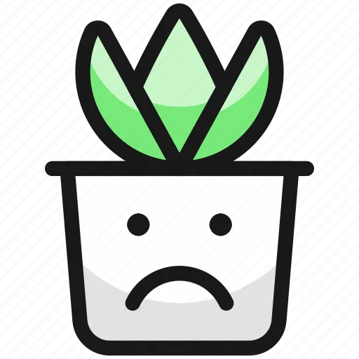

Los animales se comen unos a otros en la naturaleza. 
Esto es cierto. Sin embargo, cuando un lobo caza un conejo o un le칩n caza una gacela, lo hacen por necesidad: no podr칤an sobrevivir comiendo hierba. Para nosotros, en cambio, comer animales es s칩lo una opci칩n: podemos sobrevivir perfectamente sin estos productos. Si podemos evitar matar animales a trav칠s de nuestra alimentaci칩n, 쯣or qu칠 no hacerlo?
Los humanos estamos en la cima de la cadena alimentaria. 游댛
Es cierto que actualmente nos encontramos en una situaci칩n de poder por encima de cualquier otra especie animal, y que tenemos los medios para criarlos, explotarlos y matarlos como queramos. Sin embargo, el simple hecho de ostentar este poder no nos da la justificaci칩n moral para ejercerlo.
La vida de una persona vale m치s que la vida de un animal. 
No hace falta poner la vida de un animal al mismo nivel que la vida de una persona para decidir no comer animales. Basta con considerar que su vida o su sufrimiento tienen m치s valor que un bocadillo o una hamburguesa.
No se puede sobrevivir sin comer carne/huevos/l치cteos. 
Todos los nutrientes que encontramos en la carne, los huevos y los l치cteos tambi칠n pueden ser obtenidos de otras fuentes. Dicho de otro modo, podemos obtener todos los nutrientes que necesitamos sin tener que consumir animales. La Academia de Nutrici칩n y Diet칠tica de Estados Unidos, la organizaci칩n con m치s nutricionistas profesionales del mundo, afirma que las dietas 100% vegetales son adecuadas para cualquier etapa de la vida, incluyendo la infancia y el embarazo.
Comer vegano es caro.
Es cierto que las hamburguesas o quesos vegetales suelen ser m치s caros que sus equivalentes animales. Sin embargo, la gran mayor칤a de productos vegetales son significativamente m치s baratos que la carne, los huevos o el queso. Verduras, legumbres, arroz, pasta, pan, cereales, fruta, tub칠rculos... los alimentos m치s baratos son todos vegetales.
Las plantas tambi칠n pueden sentir dolor. 
Una de las principales funciones de la conciencia es permitir un comportamiento flexible y variable en funci칩n del contexto. Dada la limitada capacidad de movimiento y de acci칩n de las plantas, cuesta pensar en situaciones en que el hecho de estar dotadas de conciencia les suponga una ventaja competitiva. Si tenemos en cuenta que la conciencia es un proceso costoso energ칠ticamente, parece poco probable que la selecci칩n natural haya seleccionado plantas conscientes de s칤 mismas.
Sin embargo, si asumimos la posibilidad de que las plantas sientan dolor, una dieta vegana permitir칤a hacer sufrir muchas menos plantas que una dieta omn칤vora. Los animales de granja o de piscifactor칤a necesitan comer plantas u otros animales para crecer, y el proceso de conversi칩n de alimento vegetal a alimento animal es muy ineficiente. Por ejemplo, para obtener 1Kg de carne de cerdo se debe alimentar al cerdo con m치s de 6Kg de vegetales. Dicho de otro modo, consumir productos de origen animal requiere cultivar muchas m치s plantas que consumir estas plantas directamente.
쯏 si como carne/huevos ecol칩gicos? 
En algunas zonas puede haber granjas abiertas donde los animales vivan al aire libre.
Es evidente que, en estos casos particulares, las condiciones de vida de los animales son mejores que en una granja convencional, y que a lo largo de su vida sufren menos. Sin embargo, la producci칩n de carne, huevos o l치cteos siempre requiere matar a los animales de los que nos beneficiamos. Si has tenido un perro o un gato con buenas condiciones de vida, 쯖onsiderar칤as 칠tico degollarlo para comer su carne?
Sources 游댌
- Melina et al. (2016). Position of the Academy of Nutrition and Dietetics: Vegetarian Diets.
- Baars, Bernard J. (1988). In Cognitive Theory of Consciousness. Cambridge University Press.
- Alexander et al. (2016). Human appropriation of land for food: the role of diet. Global Environmental Change, 41, 88-98.